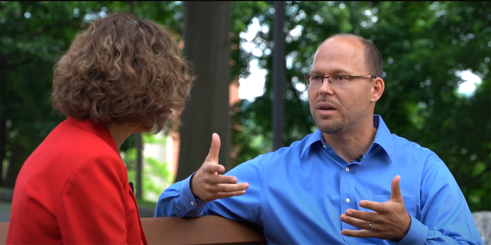
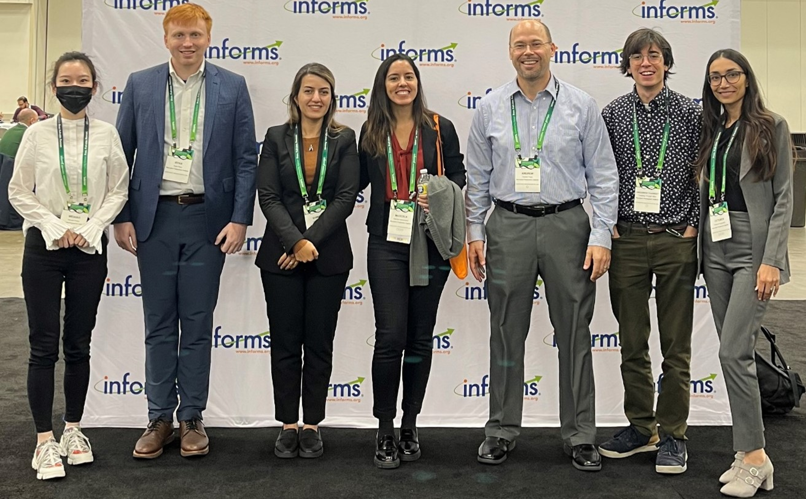
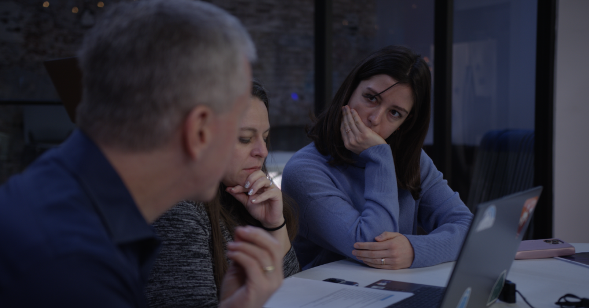

Joining Our Research Team
We are ARCHES, the Analytical Research Collaborative for a Humane and Equitable Society,
dedicated to being a bridge between rigorous analytics and societal impact. Our work lives across integer and nonlinear optimization, stochastic programming, and machine learning, and is grounded in principles of responsibility and human dignity.
We welcome passionate students, scholars and professionals who strive to conduct high-quality research while tackling real-world challenges. If you share our commitment to rigorous research and meaningful impact, read on!
Dr. Narges Ahani on commencement day

Conversation between former WPI President Laurie Leshin and Prof. Trapp

ARCHES research team at the INFORMS Annual Conference in Indianapolis

ARCHES member Özge Aygül collaborating with SWAP users
- Formulating mathematical models to capture human-centered and societal complexities
- Developing computational optimization tools that are rigorously tested and refined
- Merging machine learning and optimization into predictive and prescriptive frameworks
- Advancing integer programming value-function methodologies
- Engaging stakeholders to ensure solutions are practical, adaptable, and high-impact
- Deploying decision-support tools that drive real-world practice and policy
- Measuring adoption and outcomes to ensure tangible, scalable improvements
- Publishing research in top academic outlets that advances academia and practice
- Strong foundation in mathematics: linear algebra, probability, discrete math
- Proficient in programming, algorithms, and data structures (e.g., python, solvers)
- Comfort with using and advancing integer, nonlinear, and stochastic programming
- Experience with, and interests in, machine learning and its integration with optimization
- Independent thinker with a collaborative spirit: can take initiative, can contribute to team
- Strong sense of responsibility, maturity, and motivation to drive impactful research
- Demonstrated leadership experience, ability to work well in interdisciplinary teams
- Genuine commitment to using analytical methods for societal good
- Desire to translate theory into practical tools and engage with stakeholders
- Small‐group and one‐on‐one settings for stronger rapport
- Regular check‐ins and peer collaboration
- Guidance that focuses on both technical excellence and personal growth
- Encourage reflection: annual review, goal‐setting to shape career trajectories
- Research experiences in critical areas of need (refugee resettlement, foster care)
- We celebrate together: papers, conference presentations, birthdays
"Professor Trapp guided me professionally and personally, helping me navigate my research and career with confidence." ~ Dr. Narges Ahani (VP, Operations Research Analyst III, Bank of America)
- Mentorship in applying mathematical optimization and data science theory and methods to pressing real‐world challenges
- Hands‐on work with advanced analytical tools (Gurobi, python, machine learning)
- Interdisciplinary collaboration and leadership opportunities
- In-depth experience in writing manuscripts and grant proposals
- Opportunities to publish in top operations research and data science outlets
- Development of open-source software and reproducible research practices
- Guidance on integrating fairness and ethical considerations into analytical models
- Yes, particularly if your interests align with optimization and social impact
- Integration into ongoing projects or new collaborative efforts
- Self-funding can be beneficial; even so, let me know your situation
- Access to lab resources and participation in ARCHES activities
- Competitive research and teaching assistantships available as funding allows
- Support for external fellowship opportunities like NSF GRFP (US nationals), Fulbright
- Potential to collaborate on writing externally focused proposals (including NSF)
- For undergrads: research experiences through NSF REU or project-based stipends
- Funding and advising capacity are limited; priority to those whose skills and goals align closely with our research
- Academic roles (tenure‐track faculty, postdoc)
- Long‐term collaborations with ARCHES on interdisciplinary projects
- High‐impact industry, NGO, and consulting positions in optimization and data science
- Entrepreneurial pursuits leveraging advanced analytics
Next Steps for Those Ready to Engage
We maintain high standards and seek candidates who align well with our mission. If you are a strong fit, here's how to get started:
- Send an email to me and introduce yourself! Tell me who you are, why you do what you do, and which ARCHES areas excite you.
- Attach your CV, along with transcripts, GRE, and TOEFL scores (as applicable)
- Write a brief, meaningful statement; I'm most likely to follow up with inquiries that are sincere and insightful. Include any examples of your work (code repositories, writing samples) that show your preparation for rigorous research.
I value candidates with strong mathematical and programming foundations, maturity in their work ethic, and a sincere drive to address real-world challenges. If that's you and there appears to be a strong and genuine fit, I look forward to discussing next steps.